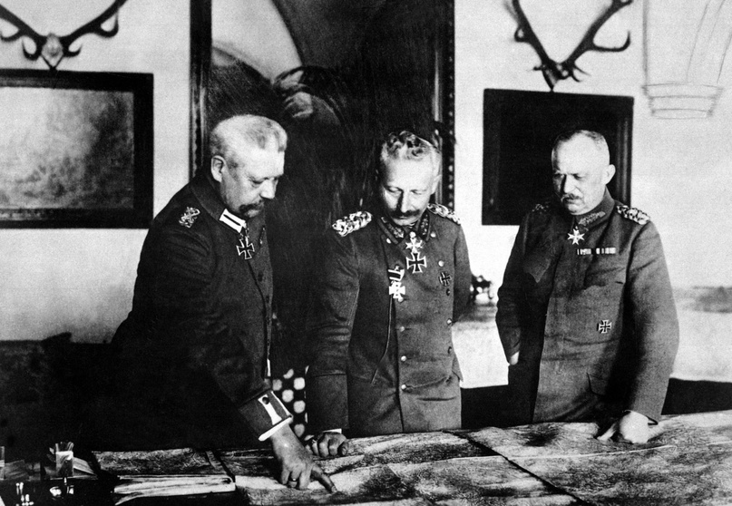
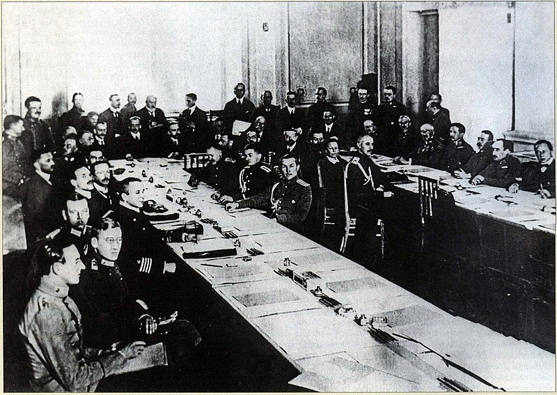
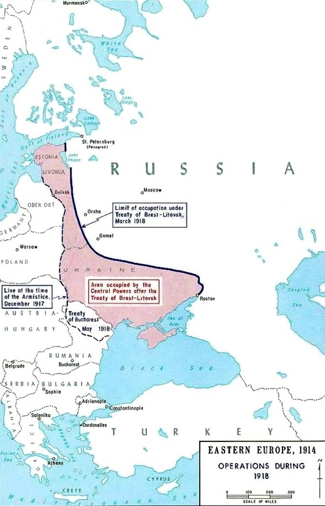

Как Германия навязала России Брестский мир в 1918 году?
Авторы статьи: Максим Вахминцев, Маргарита Певнева
Опубликовано: 30 мая 2024
Опубликовано: 30 мая 2024
Статья в группе ВК Историческая империя: https://clck.ru/3M5Haq
Первыми большевистскими постановлениями после свержения Временного правительства 25 октября (7 ноября) 1917 года стали «Декрет о земле», национализировавший всю землю государства и безвозмездно предоставлявший её в пользование крестьянам и «Декрет о мире», призывавший все воюющие стороны к прекращению войны и подписанию мира «без аннексий и контрибуций». Страны Антанты категорически отказались от этого, на призывы большевиков откликнулись лишь Центральные державы.
Первыми большевистскими постановлениями после свержения Временного правительства 25 октября (7 ноября) 1917 года стали «Декрет о земле», национализировавший всю землю государства и безвозмездно предоставлявший её в пользование крестьянам и «Декрет о мире», призывавший все воюющие стороны к прекращению войны и подписанию мира «без аннексий и контрибуций». Страны Антанты категорически отказались от этого, на призывы большевиков откликнулись лишь Центральные державы.
После свержения Временного правительства пост Верховного главнокомандующего русской армии, по уставу, принял начальник штаба Ставки генерал Николай Николаевич Духонин. Ленин потребовал от того начать мирные переговоры с немцами, на что тот ответил, что не обладает соответствующими полномочиями. Вождь большевиков объявил того «врагом народа» и приказал сдать дела прапорщику Николаю Васильевичу Крыленко – давнему члену большевистской партии и одному из руководителей штаба ВРК, бравшего власть в Петрограде.
В качестве места переговоров с немцами был выбран нейтральный Брест-Литовск. Лев Троцкий, возглавлявший советскую делегацию, затягивал переговорный процесс изо всех сил. Он постоянно получал информацию о беспорядках в Германии и Австро-Венгрии, связанных с голодом и усталостью населения от войны. Троцкий ожидал, когда коммунисты и социал-демократы поднимут народные массы, свергнут монархии Гогенцоллернов и Габсбургов.
Для Берлина ситуация осложнялась еще и тем, что с 1917 года новый император Австрии и король Венгрии Карл Габсбург вел сепаратные переговоры с Антантой, поскольку в обстановке социально-экономического кризиса, тяжелых поражений на фронтах и обострения национальных противоречий не верил в возможность победного завершения войны. Между Берлином и Веной имелись разногласия и по вопросу будущей принадлежности польских земель, устройства польского государства.
Германское правительство и военное командование понимали, какими соображениями руководствуются большевики. Фельдмаршал Пауль фон Гинденбург, будущий президент Германии и человек, который передаст в 1933 году власть Адольфу Гитлеру, настаивал на том, чтобы Германия, как бы сильно и срочно она не нуждалась в мире, заключала его только на своих условиях. Последняя одновременно вела переговоры с УНР о поставках в Германию продовольственных товаров в обмен на выдачу снаряжения и боеприпасов для украинской армии с русских же военных складов. Так же, как и Троцкий, немцы тянули в Бресте время до заключения соглашения с Украиной.
Еще 5 (18) января штаб германского Восточного фронта приступил к подготовке наступательной операции на петроградском направлении. Операция носила название «Фаустшлаг» («Удар кулаком»). 31 января (13 февраля) на совещании Вильгельма II с представителями имперского правительства и верховного командования решался вопрос о возобновлении военных действий против Советской России. По итогам было поддержано высказанное Людендорфом мнение о необходимости наступления, которое должно было:
- освободить дивизии на Восточном фронте для переброски на Французский военный театр;
- сохранить соглашение с Украиной и обеспечить снабжение Германии и Австро-Венгрии за счёт русских областей;
- сокрушить или, как минимум, до предела ослабить советское правительство.
{kind=link}
{kind=link}
{kind=link}
Германия готовилась, после заключения договора с УНР, выставить Советской России требование очистить от своих войск Прибалтику, Белоруссию, Украину, Финляндию и Закавказье. Это и произошло 9 февраля 1918 года. В тот же день, ссылаясь на сообщения об антивоенной агитации большевиков в германских частях, о призывах к устранению императора и генералитета, германская делегация во главе с генералом Максом Гофманом потребовала от Советской России незамедлительно очистить прибалтийские области до линии Нарва-Псков-Двинск. Германия настаивала на признании права народов Польши, Литвы, Курляндии, Эстляндии и Лифляндии (будущие Латвия и Эстония) на самоопределение.
Для Вильгельма Россия была принципиальным врагом, препятствовавшим экспансии Германии в Восточной Европе. Он считал необходимым изолировать ее в границах Московского царства в начале 17 века и отторгнуть западные окраины Российской империи. Здесь находились как черноземные территории, так и важные промышленные центры – Северо-Западный край считался одной из самых экономически развитых областей России.
Политики, в частности глава германского МИДа Рихард Кюльман, и рейхсканцлер Георг Гертлинг, советовали Вильгельму не распространять германскую сферу влияния на всю Прибалтику, дабы не наносить удар по будущим отношениям с Россией. Но куда большее влияние на принятие решений имели военные: Гинденбург настаивал на необходимости присутствия германских войск в регионе для обеспечения безопасности рейха с северо-востока.
Еще на совещании 13 февраля была принята дата истечения перемирия с Россией — 17-е число. Наступление намечалось одновременно на трёх направлениях — петроградском (в Прибалтике), центральном (в Беларуси) и южном (на Украине совместно с австрийцами).

Для Вильгельма Россия была принципиальным врагом, препятствовавшим экспансии Германии в Восточной Европе. Он считал необходимым изолировать ее в границах Московского царства в начале 17 века и отторгнуть западные окраины Российской империи. Здесь находились как черноземные территории, так и важные промышленные центры – Северо-Западный край считался одной из самых экономически развитых областей России.
Политики, в частности глава германского МИДа Рихард Кюльман, и рейхсканцлер Георг Гертлинг, советовали Вильгельму не распространять германскую сферу влияния на всю Прибалтику, дабы не наносить удар по будущим отношениям с Россией. Но куда большее влияние на принятие решений имели военные: Гинденбург настаивал на необходимости присутствия германских войск в регионе для обеспечения безопасности рейха с северо-востока.
Еще на совещании 13 февраля была принята дата истечения перемирия с Россией — 17-е число. Наступление намечалось одновременно на трёх направлениях — петроградском (в Прибалтике), центральном (в Беларуси) и южном (на Украине совместно с австрийцами).
{kind=link}
Главнокомандующий Восточным фронтом Пауль фон Гинденбург и его начальник штаба Эрих Людендорф дают доклад кайзеру Вильгельму.
В Москве шли дебаты относительно того, принимать немецкие условия или нет. С одной стороны, большевики стремились любой ценой обезопасить свою власть. Сам Ленин считал главным врагом внутреннюю контрреволюцию, для борьбы с которой считал необходимым прекратить войну с врагом внешним.
С другой стороны, требования германской стороны никак не соответствовали заявленной концепции большевиков «мира без аннексий и контрибуций». Заключение мира на условиях противника могло, как то дальше покажут события, настроить немалую часть населения против советской власти, которая на тот момент установилась практически во всех крупных регионах страны.
В конце концов Троцкий объявил о том, что Советская Россия в одностороннем порядке прекращает военные действия, но при этом мирный договор, предложенный Германией, не подписывает. 18 февраля войска германского блока на Восточном фронте перешли в наступление по всему фронту от Балтийского моря до Карпат. Корабли Балтийского флота, базировавшиеся в финском Гельсингфорсе, были переведены в Кронштадт (операция «Ледовый поход») в связи с риском его захвата германской и финской армиями.
Советская Россия находилась на грани военной катастрофы. Красногвардейцы и отряды рабочих не могли полноценно сдержать немецкий натиск, создалась угроза потери Москвы и Петрограда, где еще продолжало находиться большевистское правительство. Его члены отказывались принять немецкие условия, Ленин же заявлял:
«Для революционной войны нужна армия, а у нас армии нет… Несомненно, мир, который мы вынуждены заключать сейчас, - мир похабный, но если начнется война, то наше правительство будет сметено и мир будет заключен другим правительством».

С другой стороны, требования германской стороны никак не соответствовали заявленной концепции большевиков «мира без аннексий и контрибуций». Заключение мира на условиях противника могло, как то дальше покажут события, настроить немалую часть населения против советской власти, которая на тот момент установилась практически во всех крупных регионах страны.
В конце концов Троцкий объявил о том, что Советская Россия в одностороннем порядке прекращает военные действия, но при этом мирный договор, предложенный Германией, не подписывает. 18 февраля войска германского блока на Восточном фронте перешли в наступление по всему фронту от Балтийского моря до Карпат. Корабли Балтийского флота, базировавшиеся в финском Гельсингфорсе, были переведены в Кронштадт (операция «Ледовый поход») в связи с риском его захвата германской и финской армиями.
Советская Россия находилась на грани военной катастрофы. Красногвардейцы и отряды рабочих не могли полноценно сдержать немецкий натиск, создалась угроза потери Москвы и Петрограда, где еще продолжало находиться большевистское правительство. Его члены отказывались принять немецкие условия, Ленин же заявлял:
«Для революционной войны нужна армия, а у нас армии нет… Несомненно, мир, который мы вынуждены заключать сейчас, - мир похабный, но если начнется война, то наше правительство будет сметено и мир будет заключен другим правительством».
{kind=link}
Заключение Брестского мира представителями Германской империи, РСФСР и УНР.
3 марта 1918 г. состоялось подписание Центральными державами и советской Россией Брест-Литовского мирного договора. Россия признавала независимость Финляндии, стран Прибалтики и Закавказья, БНР и УНР. Армия демобилизовалась, флот передавался Германии, устанавливались крайне невыгодные для России таможенные тарифы, а по заключенному позже финансовому соглашению Германии ещё выплачивалась контрибуция в 6 млрд. марок.
5 марта немецкие войска под командованием генерал-майора Рюдигера фон дер Гольца высадились на Аландских островах. 3 апреля Балтийская дивизия высадилась на полуострове Ханко, а 7 апреля отряд полковника Бранденштейна высадился около Ловиисы. Активные действия германской и финской армий сметали сопротивление финской Красной Гвардии, что позволило в кратчайшие сроки занять значимые города Тамперсфорс (Тампере) и Гельсингфорс.
Прибалтика рассматривалась как колония Второго рейха. 8 марта 1918 года в Митаве был избран Курляндский ландтаг. 15 марта Вильгельм признал Курляндское герцогство самостоятельным государством. 12 апреля в Риге на объединенном собрании Лифляндии, Эстляндии, города Рига и острова Эзель было объявлено о создании Балтийского герцогства (в его состав вошло и Курляндское герцогство).

{kind=link}
Территориальные потери России по Брест-Литовскому мирному договору с Центральными державами от 3 марта 1918 года
Брестский мир стал одним из катализаторов Гражданской войны. Россия отказывалась от территорий, которые были присоединены в течение 300-летнего правления дома Романовых, понесла огромные экономические потери. Договор с Центральными державами был сочтен антибольшевистскими силами оскорблением национальной чести, отрезал для белых возможность каких-либо компромиссов с большевиками. Тех обвиняли и в падении международного престижа России, связанного с отказом большевиков от союзнических обязательств перед Антантой.
Те, в свою очередь, считали как раз белых предателями национальных интересов России, служащими Антанте и обращали внимание на то, что с падением Германской империи в ноябре 1918 года положения договора, в частности о признании лимитрофных государств, потеряли свою юридическую силу.